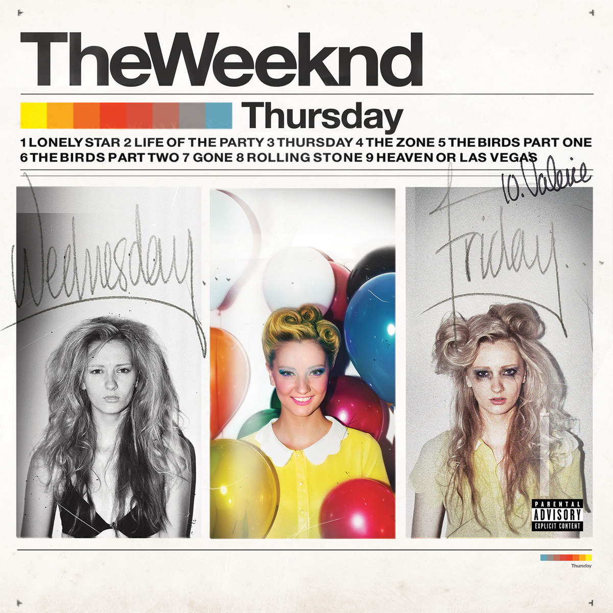

The Weeknd | Trilogy
文章发布时间:
最后更新时间:
文章总字数:
预计阅读时间:
最后更新时间:
文章总字数:
1.1k
预计阅读时间:
6 分钟
The Weeknd 于 2011 年相继发行的三张混音带三部曲，以朦胧阴郁的另类 R&B 质感写就了他生涯的序章。

House of Balloons
Released 21 March 2011
A Republic Records release.; ℗ 2011 The Weeknd XO, Inc.

Thursday
Released 18 August 2011
Distributed By Republic Records.; ℗ 2011 The Weeknd XO, Inc.

Echoes of Silence
Released 21 December 2011
Distributed By Republic Records; ℗ 2011 The Weeknd XO, Inc.